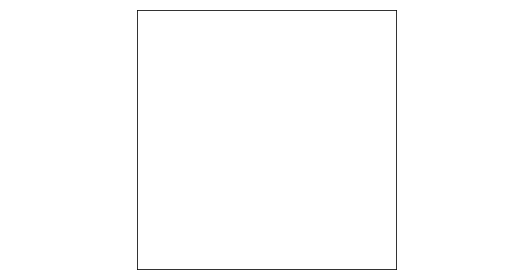

Imaging
SEM
Sizes and spacings in SEM images.
Steps
Open Images...Open SEM images. The pixel size comes from the TIFF tags or the scale bar.- Pick the line tool and draw across features: each length is shown in nm or µm.
Run Allmeasures every image the same way; Compare puts samples side by side.Results CSV...Export the lengths and their statistics.
How it works

Worked example
Accordion MXene after HF: draw across 20 gaps between the sheets. A mean gap of 310 ± 40 nm, compared with another etch time, shows how far the layers opened.